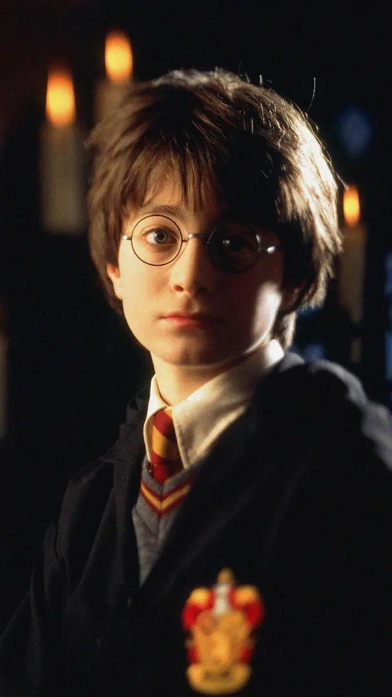
哈利·波特
"大难不死的男孩"
本作的主人公，勇敢善良，出生在一个魔法家庭，但父母被黑魔法师伏地魔杀害，从小在麻瓜家庭遭受虐待，后来来到魔法世界的格兰芬多学院学习和生活。
了解更多
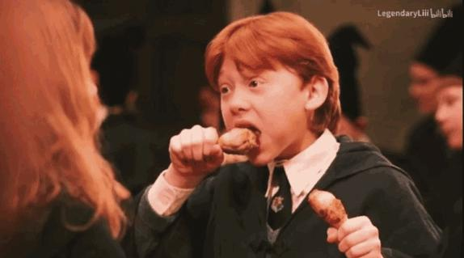
罗恩·韦斯莱
魔法师
一个很大的纯血家族的孩子，有时搞笑但忠诚友善，哈利最好的朋友之一，在霍格沃兹被分到格兰芬多学院，经常和哈利一起冒险。
了解更多
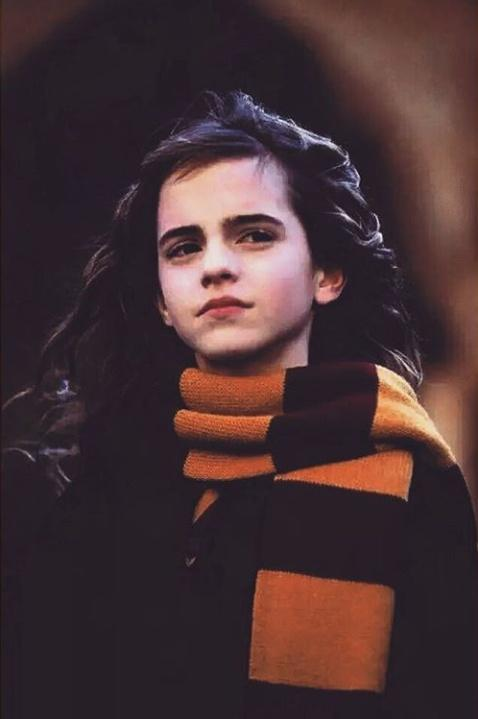
赫敏·格兰杰
优等生
出生于麻瓜家庭的巫师，但凭借刻苦的学习和聪明的才智在魔法学院霍格沃兹中名列前茅，之后成为格兰芬多的级长，哈利最好的朋友之一。
了解更多
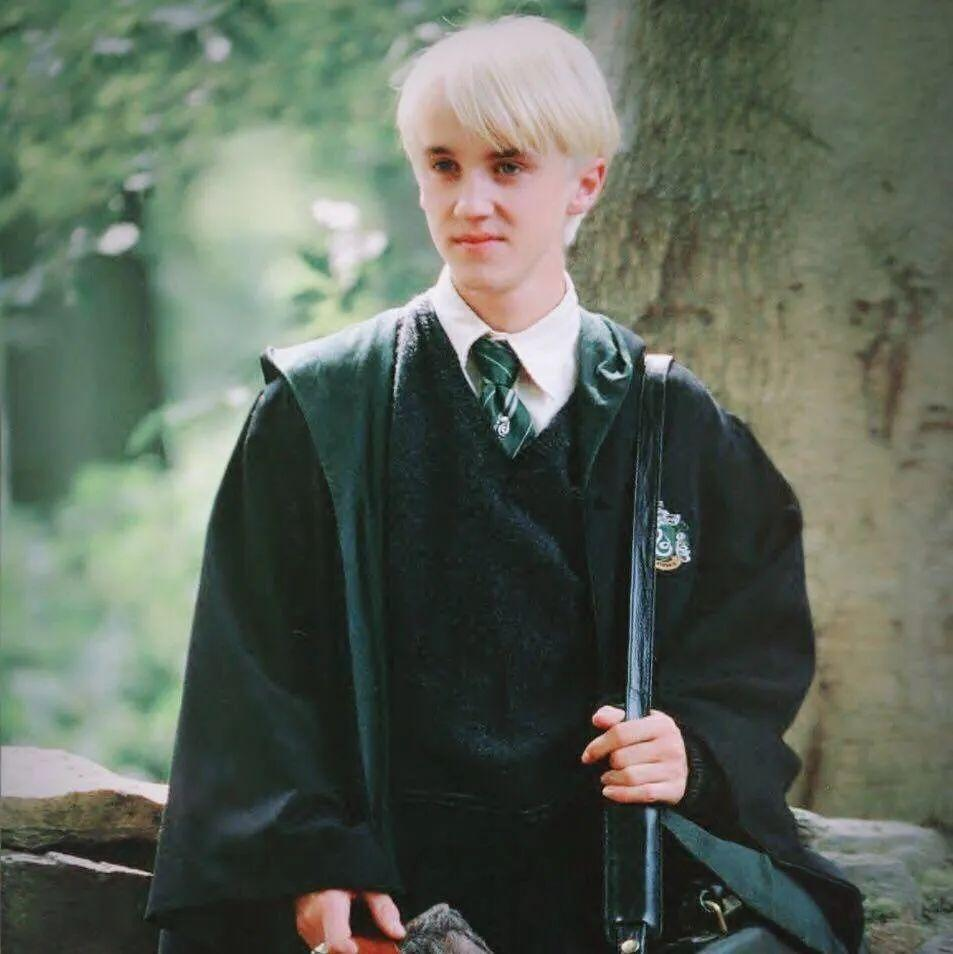
德拉科·马尔福
救世主的死对头
高傲的纯血家族巫师，看不起麻瓜和非纯血巫师，在第一次前往霍格沃兹的校车上被哈利拒绝怀恨在心，经常和他对着干。
了解更多
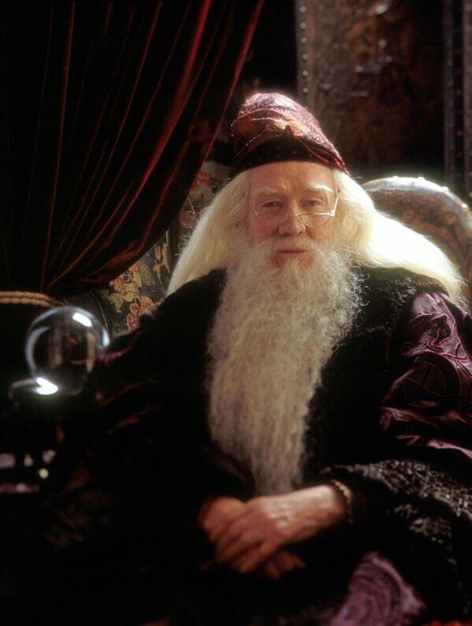
阿不思·邓布利多
霍格沃兹校长
曾击败第一任黑巫师盖勒特·格林德沃，被公认为是当代最伟大的巫师，作为霍格沃兹的校长给与哈利很多鼓励和帮助。
了解更多
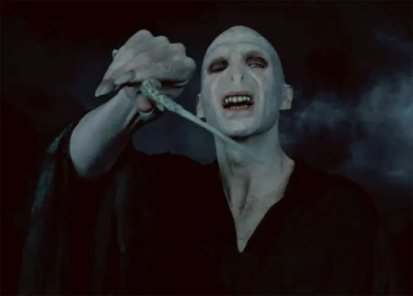
伏地魔
“名字都不能提的那个人”
邪恶残忍，极端的巫师纯血主义，第1次和第2次巫师战争的发起者，带领食死徒想要让纯血巫师统治世界，后在想要杀死哈利时被反弹后肉身死亡。
了解更多
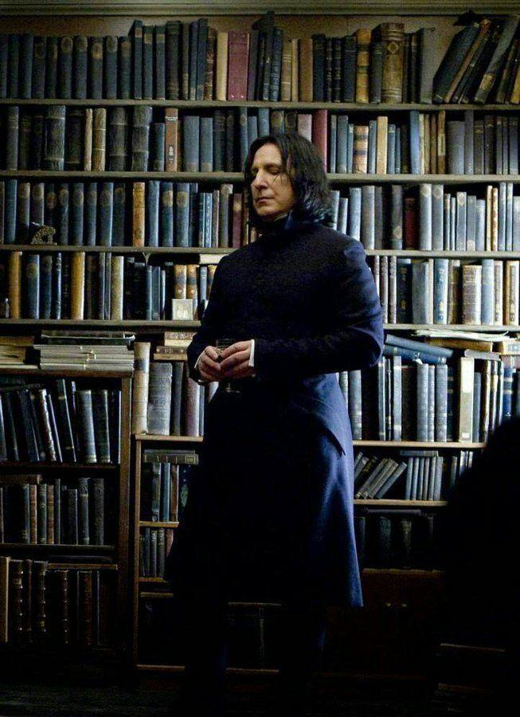
西弗勒斯·斯内普
斯莱特林院长
毕业于霍格沃兹斯莱特林，喜欢哈利的母亲，后加入食死徒，在伏地魔死后退出成为霍格沃兹老师，哈利的魔药课老师，因为种种原因不喜欢哈利。
了解更多
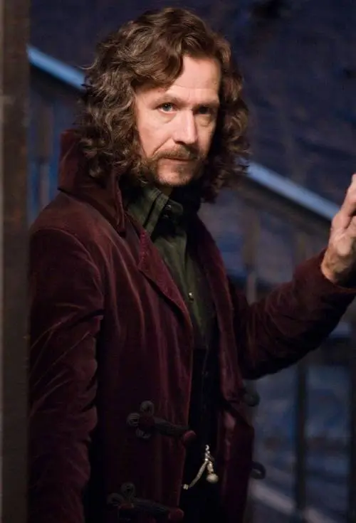
小天狼星布莱克
大脚板
哈利波特父母的好朋友，哈利的教父，被冤枉害死哈利父母而关入阿兹卡班。
了解更多
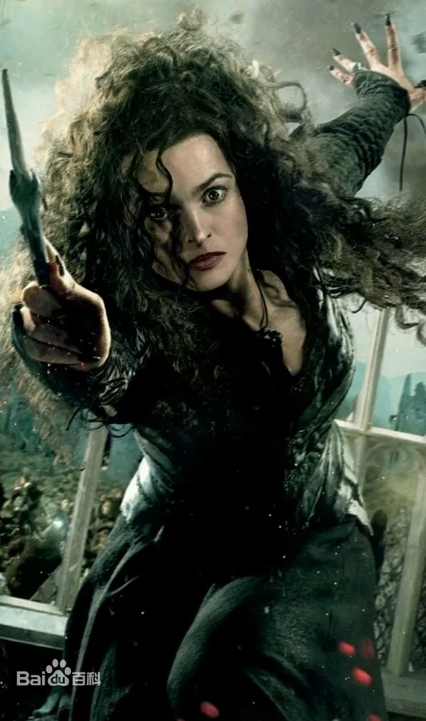
贝拉·莱斯特兰奇
伏地魔忠诚的仆人
来自纯血的布莱克家族，小天狼星的堂姐，食死徒最为残暴的人之一，被关入阿兹卡班。
了解更多
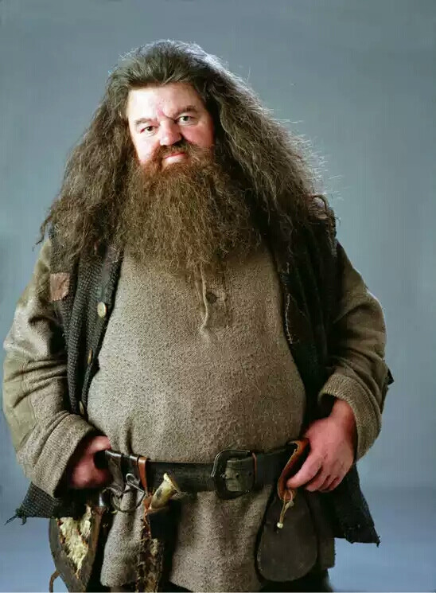
海格
保护神奇动物课教师
一名混血巨人，是将哈利带入魔法世界的人，哈利认识的第一个巫师，外在粗犷内心友善，喜欢动物和自然。
了解更多
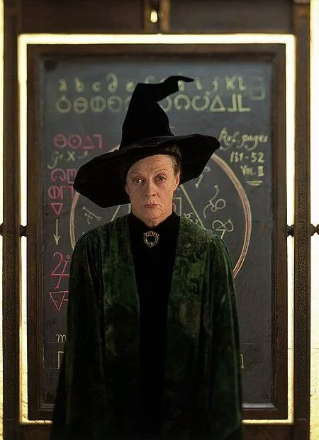
米勒娃·麦格
格兰芬多院长
一位坚强的女巫，魁地奇狂热者。她是位公平的导师，对四个学院一视同仁。同时她也很严厉，担任变形课教授。
了解更多
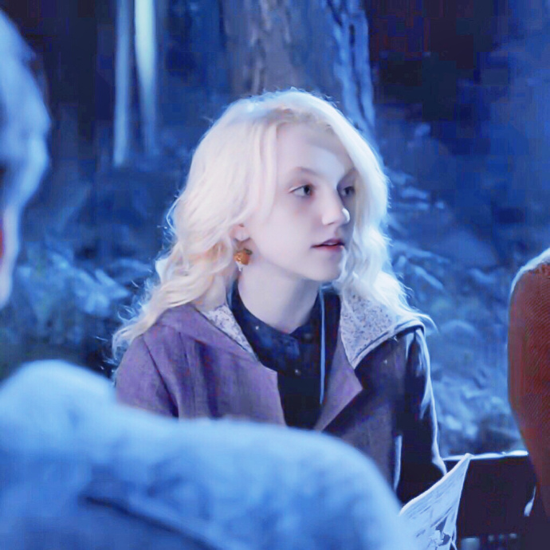
卢娜·洛夫古德
疯姑娘
拉文克劳学院学生，比哈利·波特小一年级。看上去恍恍惚惚的，很明显地散发出一种怪里怪气，飘飘忽忽的气质。
了解更多